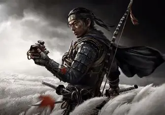

For this final project Ill be explaining one of my faviorate games.
Ghost of Tsushima is a 2020 action-adventure game developed by Sucker Punch Productions and
published by Sony Interactive Entertainment. The player controls Jin Sakai, a samurai on a quest to
protect Tsushima Island during the first Mongol invasion of Japan. Jin must choose between following
the warrior code to fight honorably, or by using practical but dishonorable methods of repelling the
Mongols with minimal casualties. The game features a large open world which can be explored either
on foot or on horseback. When facing enemies, the player can choose to engage in a direct
confrontation using Jin's katana or to use stealth tactics to assassinate opponents. A multiplayer
mode titled Ghost of Tsushima: Legends was released in October 2020 and made available separately in
September 2021.

How its done
Ghost of Tsushima has received a positive reception from players and critics alike. The game has been praised
for its stunning visuals, engaging gameplay mechanics, and emotionally resonant story. The Director’s Cut
release in 2021 further enhanced the experience with new content and quality-of-life improvements. The
game's open-world design, dynamic weather system, and minimalist UI have been particularly well-received,
encouraging organic exploration and immersion. The game's combat system has been noted for its fluidity and
satisfying difficulty curve, making it a standout title in the action-adventure genre. Overall, Ghost of
Tsushima has been recognized for its meticulous attention to detail, respect for player time, and
high-quality experience that stands out in an industry often obsessed with maximizing content and playtime.